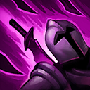
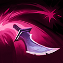

起手裝備
 增幅典籍
增幅典籍

寶珠接雷霆風暴取代預設女妖格，帽子與穿透維持收割；女妖改列控制情境。


五件成裝與鞋子分開列示；起手與核心是購買路線，不是額外佔用的成裝欄位。鞋子完成時機仍依對線壓力與回城金錢調整。


先發制人配合側翼先手，連鎖攻擊降低純擊殺成長需求；骨甲留給進場反打。


閃現點燃配合殘血窗口，敵方硬控未交時不因點燃能擊殺就盲開R。
加點優先：Q > E > W
主Q、副E、W最後；E優先序支援拾匕首後轉位，但仍受實際冷卻限制。

參與擊殺會大幅降低技能冷卻；撿起匕首時旋轉斬擊附近敵人。

向目標投擲匕首並彈跳數名敵人，最後在地面留下可拾取匕首。
提高跑速並向空中拋出匕首，短暫延遲後落在原地。
瞬移到目標單位或匕首旁並造成魔法傷害；撿匕首可大幅縮短冷卻。
快速旋轉並向附近英雄投擲刀刃，持續造成大量魔法傷害並施加重創。
拾取匕首要等落地，R引導會被控制打斷；擊殺減冷卻不代表所有技能必定立即可按。
1技彈射 → 3技跳匕首 → 普攻 → 2技留刀 → 3技撤退
一技匕首落地後瞬步觸發範圍傷害，再用二技留下第二把刀；三技冷卻縮短後跳回安全單位。
3技近身 → 2技留刀 → 1技投刀 → 4技旋轉 → 3技追匕首
先近身放二技確保腳下有匕首，大絕期間觀察控制技能；敵人離開範圍後用三技追上落地匕首。
1技壓低血量 → 3技進場 → 4技輸出 → 取得擊殺重置 → 3技轉火 → 1技追擊
首個擊殺是連鎖收割關鍵，先挑低血量或已交控制的目標；刷新後立即轉火，不要停在原地。
以一技補兵並觀察匕首落點，不要為了撿刀走進敵方控制範圍。三技可跳友軍與匕首，進場前先準備安全撤退目標。
無限寶珠 → 雷霆風暴 → 死亡之帽為預設前三件。寶珠接雷霆風暴取代預設女妖格，帽子與穿透維持收割；女妖改列控制情境。
絕對不要第一時間開大，敵方控制尚在時先用匕首拉扯。首個擊殺出現後立刻利用刷新轉火，必要時中止大絕避開致命控制。
以中路分頁的威脅為主，重點為加里歐、薇可絲、麗珊卓；移除同時列於有利與不利的衝突，對局為機制建議而非勝率排序。
對局名單是機制與分路判斷，不代表固定勝率；需同時看雙方熟練度、兵線與陣容。
寶珠接雷霆風暴取代預設女妖格，帽子與穿透維持收割；女妖改列控制情境。
W蓄力時離開嘲諷圈，逼出E後再進場；支援要計入他的R反打。
恐懼就緒時避免先交突進，先用兵線或消耗逼掉恐懼再找進場窗口。
保留對付W／R控制的距離，不追著E冰爪走進埋伏；她交出自保後再補傷害。
依本頁目前五件成裝與鞋線替換；同一格多個建議擇一。先看實際傷害和控制，再決定是否犧牲輸出或保命。
高
觸發：敵方魔防成形時優先百分比穿透；已帶虛空就保留，不因坦克多重複買第二件。
目前配置已包含對應工具；先確認是否能有效使用，不需重複購買。
鞋子更換時需連同三級升級路線一起更換；五件成裝不含鞋，主動裝仍占成裝格。
高
觸發：敵方一輪爆發使你無法完成輸出時，改中婭並保留使用時機；若已配中婭就先調整站位與啟動時間。
目前配置已包含對應工具；先確認是否能有效使用，不需重複購買。
鞋子更換時需連同三級升級路線一起更換；五件成裝不含鞋，主動裝仍占成裝格。
高
觸發：敵方單次關鍵技能先手決定生死時改女妖；護盾被遠程消耗後先退，女妖不是主動解控。
死亡之帽 → 女妖面紗
敵方單次關鍵技能先手決定生死時改女妖；護盾被遠程消耗後先退，女妖不是主動解控。
敵方單次關鍵技能先手決定生死時改女妖；護盾被遠程消耗後先退，女妖不是主動解控。
鞋子更換時需連同三級升級路線一起更換；五件成裝不含鞋，主動裝仍占成裝格。
高
觸發：回復妨礙擊殺且隊友無法穩定重創時，先遺忘寶珠過渡再改黑魔禁書；不要為小額治療過早打散核心。
死亡之帽 → 黑魔禁書
回復妨礙擊殺且隊友無法穩定重創時，先遺忘寶珠過渡再改黑魔禁書；不要為小額治療過早打散核心。
回復妨礙擊殺且隊友無法穩定重創時，先遺忘寶珠過渡再改黑魔禁書；不要為小額治療過早打散核心。
鞋子更換時需連同三級升級路線一起更換；五件成裝不含鞋，主動裝仍占成裝格。
高
觸發：護盾持續擋住主要傷害時改海洋之戟；這是破盾功能，不能替代重創。
死亡之帽 → 水仙三叉戟
護盾持續擋住主要傷害時改海洋之戟；這是破盾功能，不能替代重創。
護盾持續擋住主要傷害時改海洋之戟；這是破盾功能，不能替代重創。
鞋子更換時需連同三級升級路線一起更換；五件成裝不含鞋，主動裝仍占成裝格。
高
觸發：魔法傷害與可被韌性縮短的控制占主導時，整條鞋線改水星之靴→鎖鏈軍靴；韌性不縮短擊飛。
魔力之靴 → 水星之靴
魔法傷害與可被韌性縮短的控制占主導時，整條鞋線改水星之靴→鎖鏈軍靴；韌性不縮短擊飛。
魔法傷害與可被韌性縮短的控制占主導時，整條鞋線改水星之靴→鎖鏈軍靴；韌性不縮短擊飛。
鞋子更換時需連同三級升級路線一起更換；五件成裝不含鞋，主動裝仍占成裝格。
7.3c差異核對：7.3c直接平衡項目屬符文大亂鬥；本頁保留已核對的峽谷配置。版本更新不等於每位英雄都必須更換Tier或裝備。查看整輪校正範圍。
本頁校正版本：7.3c；校正日期：2026-10-25。
參考來源標示版本：7.3c
本輪核對官方版本差異、道具/符文引用、五成裝與鞋線、逐級加點及情境替換一致性。Tier及玩法屬本站編輯判斷，不是官方排名或台服勝率；未公開的全級技能表不推算。
評級理由：7.3c 維持 A（本站判斷）。卡特蓮娜中路C→A；同分路7.3b編輯參考。拾取匕首要等落地，R引導會被控制打斷。 7.3c 未改動此分路的英雄數值，沒有新證據只因版本號而升降。
Riot 官方資料 ↗ · Riot 官方資料 ↗ · Riot 官方資料 ↗ · Riot 官方資料 ↗ · Riot 官方資料 ↗ · WildRiftFire 參考攻略 ↗
7.3c 的直接英雄倍率改動屬符文大亂鬥；本召喚峽谷配置承接 7.3b。未把模式專屬增削轉為峽谷增削。
五件成裝、獨立鞋線、起手、核心、情境替換引用與一般符文列別均重新檢查；移除裝備不列入當前推薦。
歷史資料有後續調整時，以較新版本數值為準。
| 項目 | 調整前 | 調整後 |
|---|---|---|
| 基礎生命 | 630 | 660 |